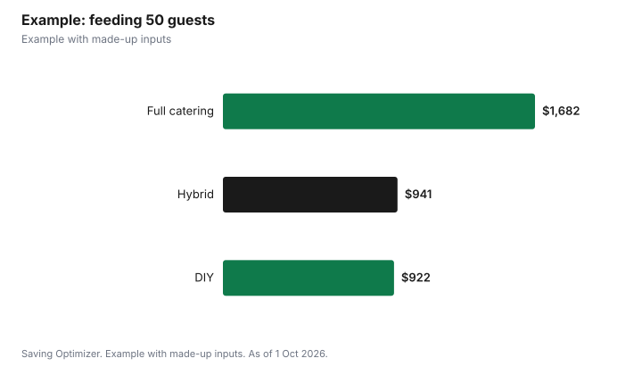

Events · Canada
Catering vs Potluck vs DIY: Feeding a Party for Less in Canada
The cheapest way to feed a party is usually a hybrid: cook or cater one main dish, and ask guests to bring sides or desserts. Full catering costs the most per guest but saves time and stress; a pure potluck costs the host least but risks too much dessert and not enough mains; cooking everything yourself is cheapest in cash but takes days. Whatever you choose, plan for food safety. Health Canada says to keep food out of the danger zone between 4°C and 60°C and to throw away cooked food left at room temperature for more than two hours. At a rented hall, add kitchen fees: one Toronto community centre charges $38 an hour for full kitchen use in 2026.
Key takeaways
- Price every option per guest, including drinks, rentals and kitchen fees.
- A hybrid of one catered or homemade main plus potluck sides often costs least.
- Assign potluck categories so you do not end up with ten desserts.
- Health Canada: discard cooked food left out more than two hours; keep hot food at 60°C or above and cold food at 4°C or below.
- Hall kitchens can cost extra; ask before you book.
- Example with made-up inputs: three ways to feed 50 guests.
The three approaches
| Full catering | Potluck | DIY (host cooks) | |
|---|---|---|---|
| Host's cash cost | Highest | Lowest | Low to medium |
| Host's time | Lowest | Low | Highest |
| Menu control | High | Low | High |
| Food safety control | Caterer handles | Each guest handles | Host handles |
| Best for | Large or formal events | Casual family events | Small groups, confident cooks |
Build a cost per guest
Get catering quotes as a price per guest, and ask what is included: delivery, setup, chafing dishes, staff, plates and cutlery, and taxes and gratuity. For DIY, add groceries, disposable or rented serving ware, ice, drinks and any kitchen fee. For a potluck, the host still usually provides drinks, plates, a main or two and the venue. Then divide each total by the number of guests. This makes it easy to see that a $25-per-guest caterer quote becomes $30 or more once delivery, staff and tax are added, or that a DIY plan becomes expensive once you rent chafing dishes.
Making a potluck work
- Assign categories by last name or household: mains, salads, sides, desserts, drinks.
- Ask for dishes in labelled containers with ingredients, so guests with allergies can choose safely.
- Provide the main yourself, or ask two households to bring mains, so there is enough protein.
- Set up a shared list or spreadsheet so people can see what is covered.
- Have serving spoons, foil and take-home containers ready.
Food safety for buffets
Buffets leave food out for hours, which is where parties go wrong. Health Canada advises keeping cold food cold and hot food hot so it never reaches the temperature danger zone between 4°C (40°F) and 60°C (140°F), where bacteria grow quickly. Throw away any cooked food left at room temperature for more than two hours. Cook meat to safe internal temperatures, measured with a food thermometer in the thickest part: ground beef and pork to 71°C, chicken and turkey pieces, ground poultry and stuffing to 74°C. Refrigerate leftovers promptly in uncovered, shallow containers so they cool quickly, and eat them within two to three days.
| Food | Temperature |
|---|---|
| Ground beef, pork, burgers, sausages | 71°C (160°F) |
| Poultry pieces, ground poultry, stuffing | 74°C (165°F) |
| Pork cuts, chops, roasts | 71°C (160°F) |
| Beef steaks and roasts, medium-rare | 63°C (145°F) |
Practical buffet habits: put out small platters and refill from the fridge or oven, use slow cookers or chafing dishes to keep hot food above 60°C, set cold dishes on ice, and clear everything back to the fridge within two hours. Give each dish its own serving utensil.
Allergies and dietary needs
Ask about allergies and dietary needs on the invitation, then plan at least one clearly labelled main that suits most restrictions, such as a vegetarian or gluten-free dish. For a potluck, ask everyone to bring a card listing ingredients, and keep dishes with common allergens, such as nuts, at one end of the table with their own utensils. A caterer can often prepare a few separate meals for guests with serious allergies; ask how they prevent cross-contact and whether those meals are labelled with names.
Middle options: platters and takeout
Between full catering and cooking yourself sit grocery store platters, restaurant party trays and bulk takeout. They can cost less than full-service catering because there is no staff or setup, and they need no kitchen time. Order early for weekends and holidays, ask whether the price includes plates and serving utensils, and confirm pickup times so hot food is not sitting in a car. Combine a few trays with homemade sides to stretch the budget further.
Kitchens at rented halls
If you heat food at a hall, check kitchen access and cost. Ralph Thornton Community Centre in Toronto, for example, lists full kitchen use at $38 an hour and cold food preparation at $19 an hour for most users in 2026, before HST, and allows the kitchen only with a room booking on holiday rates. Some halls require a licensed caterer or forbid outside food entirely, so ask before you plan a potluck.
Drinks
Drinks are easy to forget in a food budget. Water, coffee, tea and a punch or juice dispenser cost little per guest. If you serve alcohol at a rented venue in Ontario that has no liquor licence, you need a special occasion permit, and some halls charge a higher room rate when alcohol is served; see the related guides. Buy ice the day of the party and keep extra bags in a cooler.
Example with made-up inputs
These numbers are an example with made-up inputs. Joe is feeding 50 guests at a family party. Full catering at $28 per guest plus 13% HST and a $100 delivery fee: $1,682. DIY: $650 in groceries, $120 in serving ware and ice, and four hours of kitchen at $38, $152, for $922. Hybrid: Joe orders two catered trays of mains for 50 at a made-up $14 per guest, $700 plus tax, $791, provides drinks and plates for $150, and guests bring sides and desserts: $941, with far less cooking.
| Approach | Host's cost | Per guest |
|---|---|---|
| Full catering | $1,682 | About $33.64 |
| DIY with hall kitchen | $922 | About $18.44 |
| Hybrid: catered mains plus potluck | $941 | About $18.82 |

Steps
- Set the guest count and the style of meal.
- Get two catering quotes per guest, including all extras.
- Price DIY with groceries, serving ware and kitchen fees.
- Decide what guests can bring, and assign categories.
- Plan hot and cold holding, and a two-hour clear-down.
- Buy take-home containers for leftovers.
Common mistakes
- Comparing catering quotes without delivery, staff and tax.
- Leaving buffet food out all evening.
- Not assigning potluck categories.
- Forgetting the hall's kitchen rules.
- Ignoring allergies and labelling.
Related: renting a hall and a holiday party budget.
Sources
- Health Canada, Safe cooking temperatures (published 4 Jun 2024), canada.ca (Wayback copy), as of 1 Oct 2026.
- Health Canada, Food safety tips for leftovers, canada.ca (Wayback copy), as of 1 Oct 2026.
- Ralph Thornton Community Centre, Rates - Updated for 2026, ralphthornton.org, as of 1 Oct 2026.
- Catering, grocery and per-guest amounts in the example are made-up inputs.
Frequently asked questions
Is catering or potluck cheaper?
A potluck is cheapest for the host. A hybrid, with one catered or homemade main and potluck sides, often balances cost and effort.
How long can buffet food sit out?
Health Canada says to throw away cooked food left at room temperature for more than two hours.
What is the food danger zone?
Between 4°C (40°F) and 60°C (140°F), where bacteria grow quickly, according to Health Canada.
What temperature should chicken be cooked to?
74°C (165°F) for pieces, ground poultry and stuffing, according to Health Canada.
How long do party leftovers last?
Eat refrigerated leftovers within two to three days, or freeze them.
Do halls charge to use the kitchen?
Some do. Ralph Thornton Community Centre in Toronto lists $38 an hour for full kitchen use in 2026, before HST.
Researched and drafted with AI assistance and fact-checked against official Canadian sources. How we create content.
Disclosure: Saving Optimizer may earn a commission if a partner link is added later. No partnership is claimed on this page. Education only.